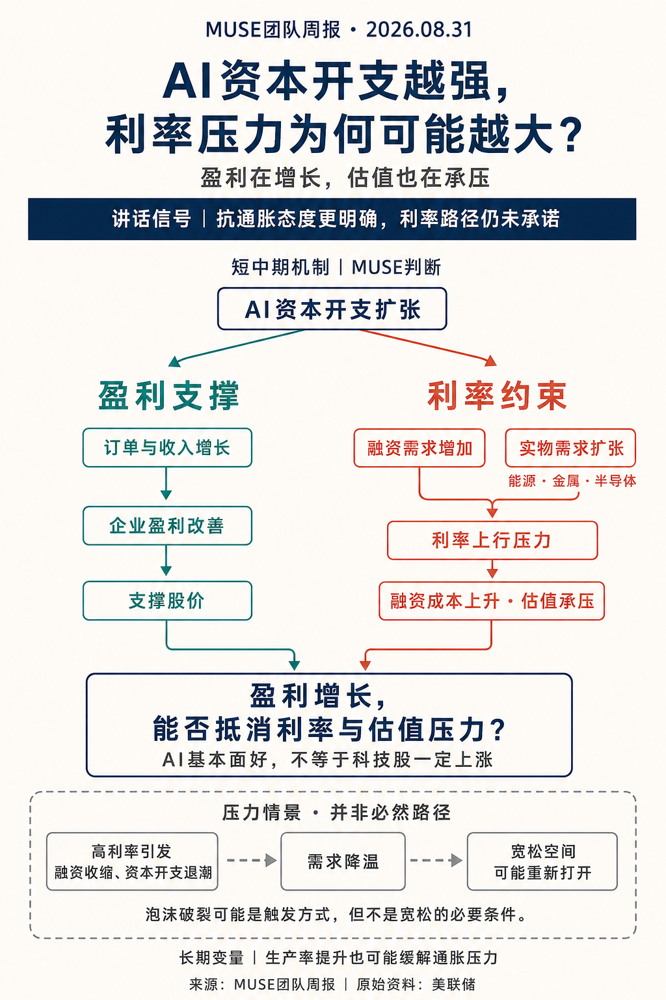

上周所有人都在等美联储主席沃什说话，我也在等。他说完之后，市场松了一口气——但我越想越觉得，这口气松得有点早。
说对了的：上一期我判断长端美债利率易上难下、全球流动性趋紧，这个方向是对的。本周 30 年期美债收益率继续在 5% 以上运行，欧债日债也在同步创新高，全球债市抛售的压力没有缓解。
需要修正的：上一期我描述沃什讲话后的市场反应时，用了"短端飙升、长端小幅回落"的说法，这个表述不够准确。实际数据是短端和长端都在上行，只是短端上行幅度更大、收益率曲线走平。长端利率压力并没有消失，只是被短期的鹰派表态暂时压住了。
先说说我怎么看这次 Jackson Hole 讲话（每年 8 月举办的全球央行年会，美联储主席的讲话被市场视为政策风向标）。
沃什上任以来的思路其实很清楚：宁愿短期让市场承受一些收紧的痛感，也要维护长期美元和美债的信用。之前美国财政部长贝森特干预长债的效果有限，如果沃什在抗通胀问题上犹豫，长端利率可能进一步上行，对美国财政、AI 融资和全球流动性都会形成压力。所以他必须向市场展现强硬态度和独立性。
但这里有个细节很多人没注意：鹰派表态有助于稳定对抗通胀决心的预期，但能不能真正缓解长债和融资压力，还得看市场数据。政策可信度、美债期限溢价和美国主权信用，这三个不是一回事，不能混为一谈。
讲话六个要点我梳理了一下，每个都有需要注意的边界：
第一，当前更侧重控制通胀，但仍保留双重使命。不是放弃就业，是美联储无法控制劳动力供应缩水（移民、人口年龄），所以就业优先级下降。如果通胀回落太慢或走平，也需要加息，这是最关键的鹰派信号。
第二，重申 2% PCE 目标，同时重视通胀趋势和广度。之前能淡化通胀压力的截距 PCE 不再强调，改用旧的通胀广度指标——这是在表决心，不能让潜在的宽松信号重新刺激市场的不信任。
第三，AI 红利如何分配仍是开放问题。沃什认为 AI 可能让企业盈利增长刺激招聘、居民消费变好，但这更多是他的主观判断。AI 收益怎么分给企业、消费者和劳动者，现在还不确定，不能直接把 AI 繁荣等同于全民收入改善。
第四，整体金融条件尚不具明显限制性，仍有收紧空间。AI 对资本的需求旺盛，对利率的敏感程度还没充分体现；工商业贷款和房贷也偏宽松。注意，"仍有加息空间"是我的解读，不是讲话原文的直接承诺。
第五，AI 生产力提升带来通缩，短期没有明确结论。之前市场把长期宽松预期押注在这一块，逻辑成立但需要时间观察。27 年能不能兑现，是我的条件预测，不是讲话事实。
第六，减少路径承诺，强调判断原则。沃什没有给机械的政策公式，而是给大方向让市场自己划重点。虽然比不上鲍威尔时代清晰，但至少有一个锚，市场焦点回到经济数据上。
下次 FOMC 会议是美国时间 9 月 15—16 日，决议对应北京时间 9 月 17 日。中间重点看 9 月 4 日非农和 9 月 11 日 CPI，同时还有职位空缺（JOLTS）、PPI 等数据。如果通胀继续黏着、需求仍有韧性，收紧压力会上升；如果通胀趋势明确改善或就业明显转弱，政策节奏仍可能调整。
这是我觉得这期最值得记住的一个判断，我把它画成了图，你先看个大概。

按住短期风险的代价，是利率长期压力可能加剧。这里有个很多人没绕过来的弯：AI 投资一边支撑订单和盈利，一边可能通过融资竞争和实物需求增加利率压力。
具体来说，需求端的通胀压力来自 AI 资本开支向传统经济传导（居民就业、收入、消费），以及 AI 和政府抢融资；供给端的通胀压力来自油价、关税和劳动力供应持续减少。两者互相强化，形成利率的双重上行力量。
科技股的关键不只是盈利有没有增长，还在于盈利上修能不能超过市场预期，并抵消贴现率和估值的压力。AI 基本面好，不等于科技股一定涨。
关于高利率会持续多久，我觉得应该把判断限制在未来数月。"2027—2028 年持续加息""6 月全球货币拐点"这种跨年度判断，覆盖范围和预测期限都超出了一场讲话能支持的结论，应该作为条件情景，而不是确定判断。在通胀黏性和 AI 投资保持韧性的情景下，美国高利率约束可能持续较长时间，但持续高位不等于连续加息，具体节奏还是取决于后续数据。
那宽松空间什么时候会打开？我的看法是：如果高利率最终使融资和资本开支收缩，需求降温，宽松空间可能重新打开。完整链条是：高利率或回报不及预期 → 融资与资本开支收缩 → 需求降温 → 通胀或就业压力变化 → 宽松空间可能打开。
注意，资产价格下跌本身不是自动降息条件，泡沫破裂也不是必要条件——它只是压力情景中的一种触发方式。如果生产率改善、资源约束缓解，或者资本开支开始退潮，也可能改变利率约束的强度。
风险是：如果业绩低于已经计入价格的预期，估值回撤风险会上升。重演 7 月暴跌不是没可能，但也不是必然结果。需要警惕美股科技波动对 A 股的情绪传导，A 股短期还是以结构性机会为主。
本周国内政策的重点是房地产领域的制度和融资机制重构。不是"国务院发布了三份文件"那么简单，是多部门分别推出了配套安排：
商品住房销售制度：住房城乡建设部、自然资源部、金融监管总局联合发布，分类推进现房销售、规范预售与资金监管。
房地产信贷制度：人民银行、金融监管总局发布，主办银行制、开发贷期限与建设销售周期匹配。
资本市场支持：证监会发布，项目融资、再融资、并购重组等安排。
这里有个容易被忽略的点：房地产融资和销售制度正在转向"以项目为基础、资金封闭管理、融资期限与建设销售周期匹配"的新模式。对预售回款的依赖下降，会提高资金管理要求，但主办银行制和开发贷配套也在缓冲转型压力——央行答问明确开发贷覆盖建设周期，预售项目最长 5 年、现房销售项目最长 7 年。所以不能简单说"银行贷款退出，房企主要靠自有资金"，政策是一面降低预售依赖，一面配套融资安排，两者同时存在。
现房销售也是按项目类别有序推进，存量项目有衔接安排，仍保留预售安排——不是所有项目立即切换现房销售，改革效果会随新项目占比提高逐步体现。
制度改革有助于降低交付和资金挪用风险，对具备资金、项目或整合能力的企业是积极信号，但不能直接推导出新增实物需求。商品需求能不能企稳，得看销售回款、开发资金、新开工和施工强度能不能同步改善。房企数量减少也不等于建设量必然下降，项目可以转移到其他主体，融资配套也可能改变新开工节奏。
房贷期限延长到 40 年的安排，可以降低月供门槛，但不直接改善收入预期。具体期限还是由银行和借款人协商，不是人人自动获得 40 年。在同利率、同本金的比较下，期限拉长会降低各期月供，但累计利息会增加。实际需求拉动还是取决于银行执行和居民收入稳定性。
对商品的映射：海外利率对国内工业品更像是宏观背景音，不至于形成太强的向下杀跌驱动。黑色建材、化工主要还是在消化自身产业端的逻辑，等成本和供应故事消退，需要观察是否回吐供应扰动溢价。旧经济仍处于深度调整阶段，从量变到质变需要年度级别以上的时间。
总结一下：沃什按住了短期风险，但按住的代价是利率长期可能更高。AI 越繁荣，利率压力越大，直到高利率使融资和资本开支收缩、需求降温，宽松空间才可能重新打开。国内地产制度在变，但需求还没跟上，商品需求企稳需要数据验证。